Tahfidz & Tadarus Al-Qur'an
Pembiasaan tadarus Al-Qur'an setiap hari Jumat dan program tahfidz bertahap untuk menanamkan cinta Al-Qur'an sejak dini.
MI Muhammadiyah Waru menghadirkan pendidikan Islam berkualitas dengan Kurikulum Merdeka, pembiasaan ibadah, dan lingkungan belajar yang aman serta menyenangkan bagi putra-putri Anda.
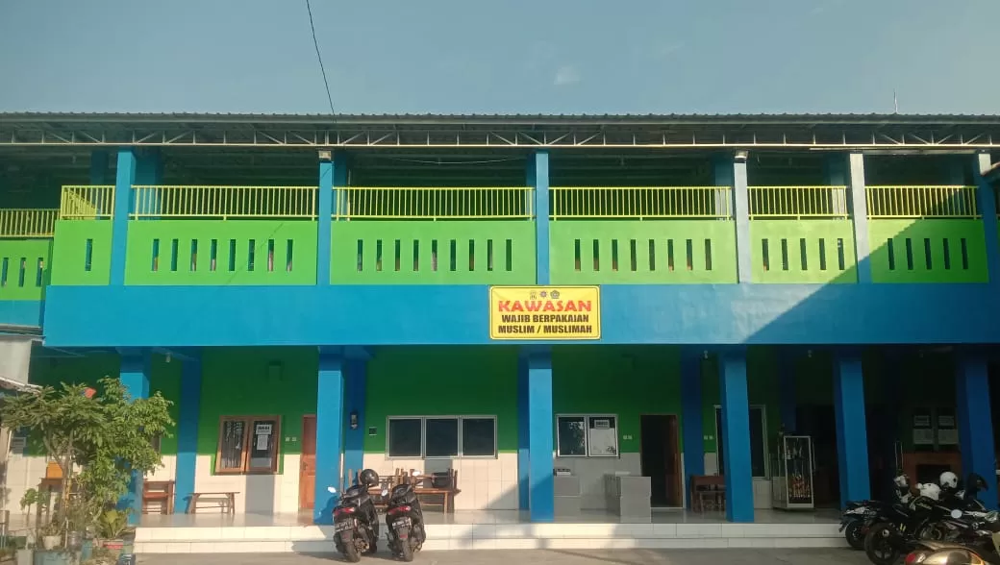
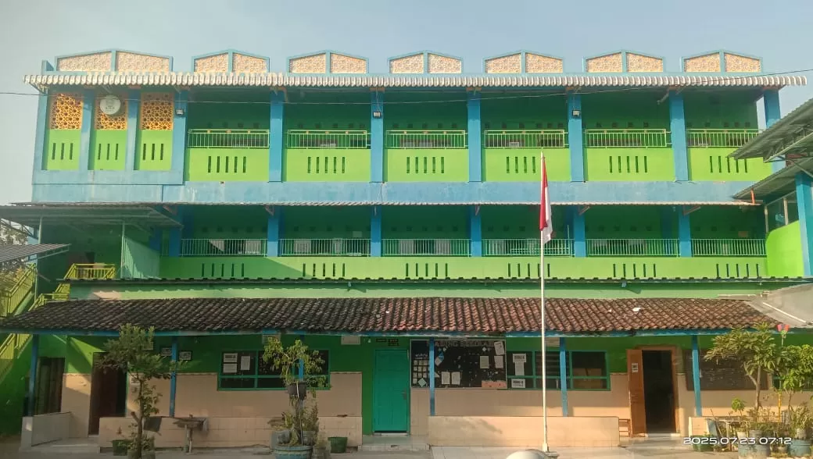
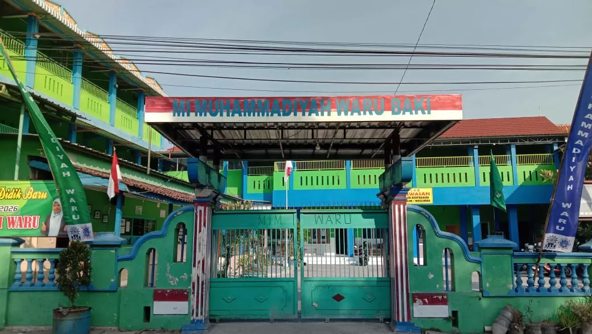
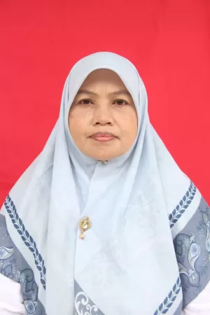
"Salam damai dan sejahtera bagi kita semua. Puji syukur kami panjatkan ke hadirat Allah SWT atas karunia dan berkah yang tiada putus telah dilimpahkan-Nya."
Saya sebagai pimpinan sekolah menyambut baik dan gembira atas prakarsa segenap guru dan karyawan MI Muhammadiyah Waru dalam menyediakan website sekolah sebagai sarana informasi publik untuk meningkatkan pelayanan kepada masyarakat dalam bidang pendidikan, khususnya bagi keluarga besar MI Muhammadiyah Waru.
Semoga dengan tersedianya website ini, masyarakat akan lebih mudah mengakses informasi dan mendapatkan pelayanan yang lebih cepat, mudah, valid, dan akuntabel. Selain itu, diharapkan website ini mampu meningkatkan kreativitas dan semangat berkarya bagi segenap guru dan karyawan MI Muhammadiyah Waru.
Saya menyampaikan ucapan terima kasih kepada semua pihak yang telah membantu tersedianya website sekolah ini. Kritik dan saran yang konstruktif sangat kami harapkan demi perbaikan dan peningkatan kualitas serta kemanfaatannya yang lebih luas.
Visi dan misi yang menjadi pedoman dalam setiap langkah pendidikan di MI Muhammadiyah Waru.
"Menjadikan sekolah yang unggul dengan lulusan yang berprestasi, disiplin, berkarakter baik, inovatif, kreatif, dan siap berkarier."
MI Muhammadiyah Waru adalah madrasah ibtidaiyah Muhammadiyah yang berlokasi di Waru, Kecamatan Baki, Kabupaten Sukoharjo, Jawa Tengah — berkomitmen mencetak generasi Qur'ani, cerdas, dan berakhlak mulia.
| Nama Sekolah | MI Muhammadiyah Waru |
|---|---|
| NPSN | 30104429 |
| Alamat | Jl. Waru-Gentan, Dusun III, Waru |
| Kecamatan | Baki |
| Kabupaten / Kota | Sukoharjo |
| Provinsi | Jawa Tengah |
| Kode Pos | 57556 |
| info@mimwaru.sch.id | |
| Website | www.mimwaru.sch.id |
Kurikulum Merdeka dipadukan dengan nilai-nilai Islam Muhammadiyah untuk mencetak lulusan yang cerdas, mandiri, dan berkarakter.
Pembiasaan tadarus Al-Qur'an setiap hari Jumat dan program tahfidz bertahap untuk menanamkan cinta Al-Qur'an sejak dini.
Pembelajaran berbasis proyek (PBL) dan permasalahan terkini yang interaktif, sesuai dengan metode Kurikulum Merdeka.
Shalat berjamaah, doa harian, dan adab Islami yang dibiasakan setiap hari di lingkungan madrasah.
Kepanduan Hizbul Wathan, seni, olahraga, dan kegiatan kepemimpinan — terbukti meraih Juara Umum Ceria Pandu Athfal 2026.
Berita, kegiatan, dan informasi terkini seputar MI Muhammadiyah Waru.
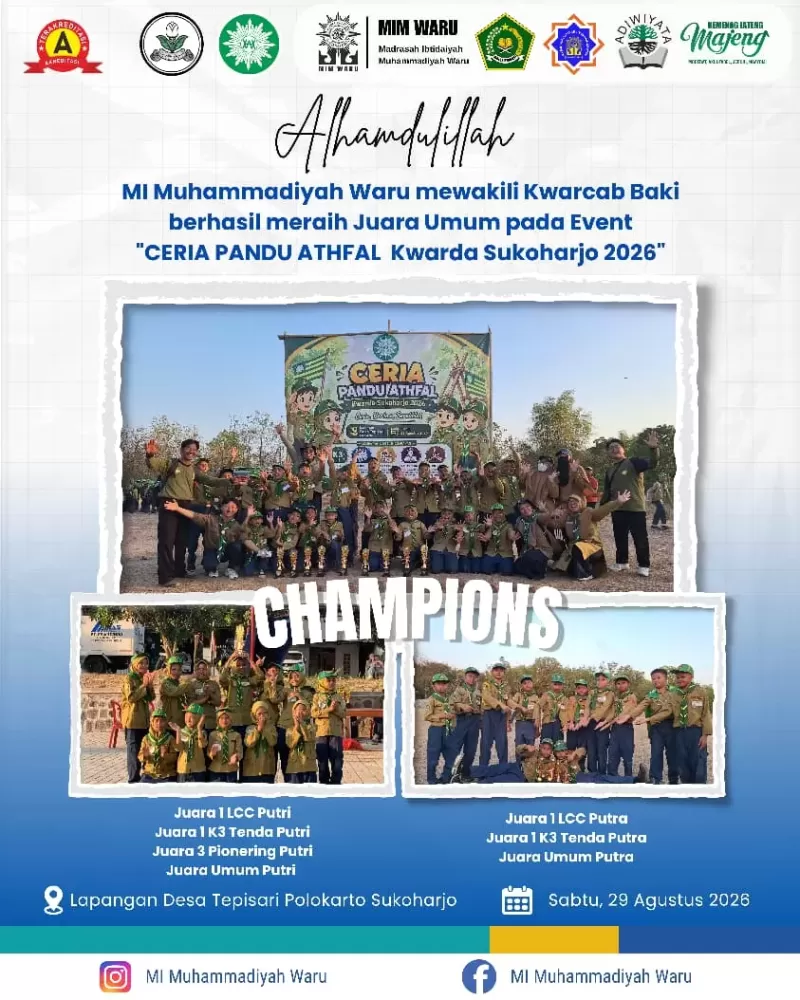
Kwarcab Gerakan Kepanduan Hizbul Wathan (HW) Baki berhasil meraih Juara Umum Ceria Pandu Athfal 2026 di Lapangan Tepisari, Polokarto, Sukoharjo — termasuk Juara 1 LCC dan Juara 1 K3 Tenda.
Baca SelengkapnyaPemerintah melalui Kemdikbud Ristek terus berupaya melakukan pencegahan bullying atau perundungan di sekolah. Berikut pengertian, jenis, dampak, dan upaya pencegahannya.
Baca SelengkapnyaKegiatan ekstrakurikuler merupakan wadah untuk menyalurkan minat dan bakat siswa. Berikut 5 manfaatnya: tanggung jawab, bakat, organisasi, kerja sama, dan disiplin.
Baca SelengkapnyaMemasuki era Kurikulum Merdeka, metode pembelajaran semakin berkembang dan interaktif — mulai dari Think Pair Share, Jigsaw, hingga Project Based Learning.
Baca SelengkapnyaDokumentasi kegiatan belajar mengajar dan pembiasaan baik yang dilakukan setiap hari.
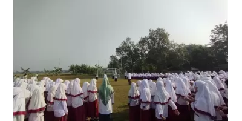
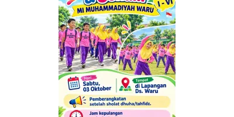
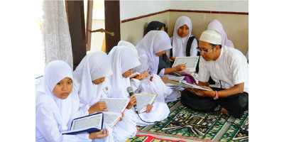
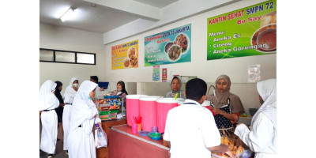
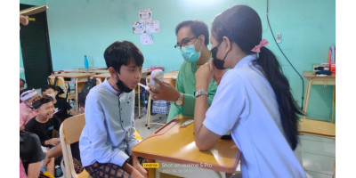
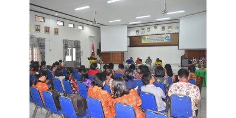
Berikan putra-putri Anda pendidikan Islam terbaik sejak dini. Kuota terbatas — segera daftarkan dan jadilah bagian dari keluarga besar MI Muhammadiyah Waru.